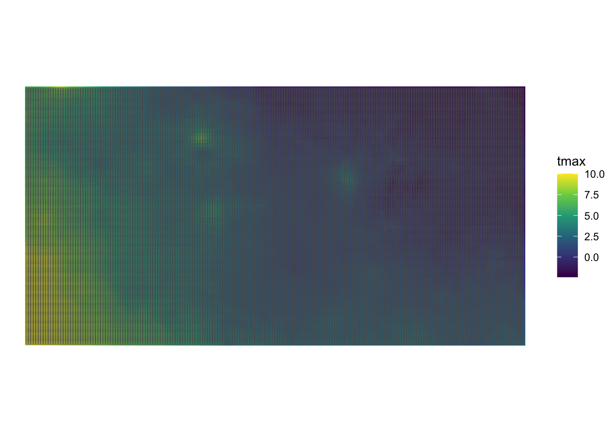
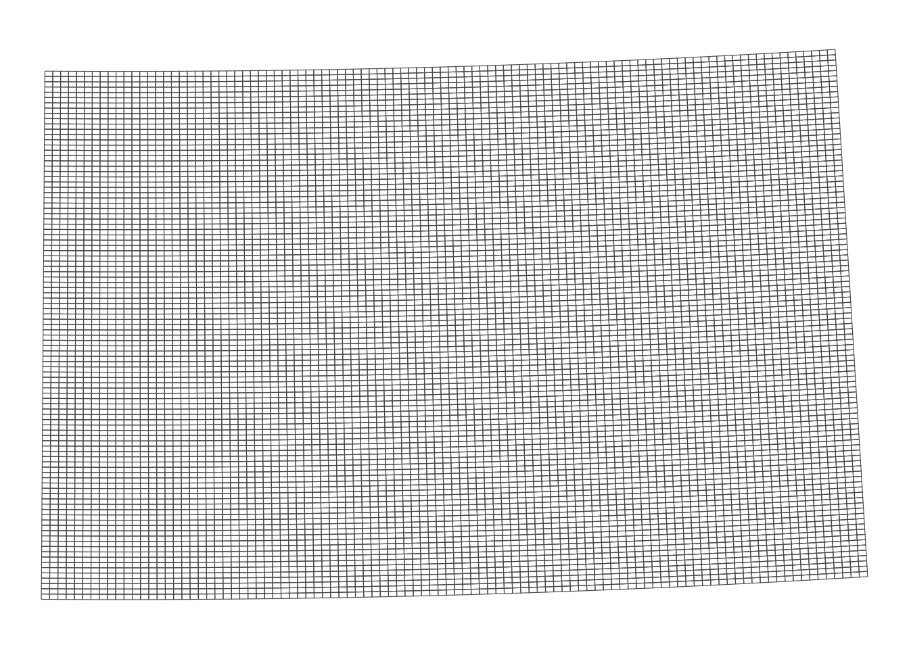
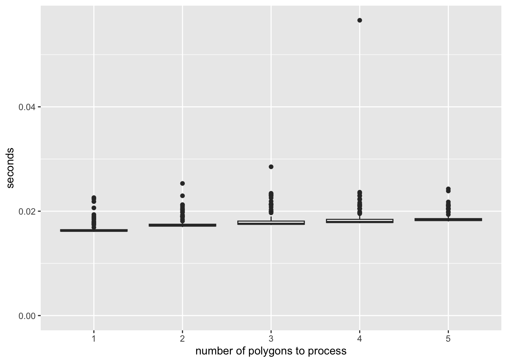

if (!require("pacman")) install.packages("pacman")
pacman::p_load(
parallel, # for parallelization
future.apply, # for parallelization
terra, # handle raster data
raster, # handle raster data
stars, # handle raster data
exactextractr, # fast extractions
sf, # vector data operations
dplyr, # data wrangling
data.table, # data wrangling
prism, # download PRISM data
ggplot2, # mapping
tictoc # timing codes
)9 Extraction Speed Considerations
Before you start
In this chapter, we will examine the speed of raster value extraction for vector data under various conditions and using different functions. Repeated raster value extraction is often necessary, such as when calculating county-level daily evapotranspiration for the past 30 years using PRISM data. In such cases, choosing the right strategy for minimizing extraction time can significantly impact performance.
To optimize extraction speed, we will explore parallelizing raster data extraction for polygon data. Parallelization for point data extraction will not be covered, as point extractions are typically very fast and unlikely to become a bottleneck in most workflows. We will start by discussing parallel extraction for single-layer raster data before progressing to multi-layer raster data.
There are several ways to parallelize the extraction process, and we will evaluate different approaches in terms of speed and memory usage. You’ll learn that the method of parallelization is crucial—naive parallelization can sometimes increase extraction time, while a more efficient approach can save hours or even days, depending on the scale of the task.
We will use the future.apply and parallel packages for parallelization. A basic understanding of these packages is assumed. If you are unfamiliar with looping via lapply() or parallelization methods like mclapply() (for Mac and Linux users) or future.apply::future_lapply() (for Windows and others), refer to Appendix A for an introduction.
Direction for replication
Datasets
All the datasets that you need to import are available here. In this chapter, the path to files is set relative to my own working directory (which is hidden). To run the codes without having to mess with paths to the files, follow these steps:
- set a folder (any folder) as the working directory using
setwd()
- create a folder called “Data” inside the folder designated as the working directory (if you have created a “Data” folder previously, skip this step)
- download the pertinent datasets from here
- place all the files in the downloaded folder in the “Data” folder
Warning: the folder includes a series of daily PRISM datasets stored by month for 10 years. They amount to \(12.75\) GB of data.
Packages
Run the following code to install or load (if already installed) the pacman package, and then install or load (if already installed) the listed package inside the pacman::p_load() function.
9.1 Data preparation
We use the following datasets in the first part of this Chapter:
Wells (points) in Kansas
#--- read in the KS points data ---#
(
KS_wells <- readRDS("Data/Chap_5_wells_KS.rds")
)Simple feature collection with 37647 features and 1 field
Geometry type: POINT
Dimension: XY
Bounding box: xmin: -102.0495 ymin: 36.99552 xmax: -94.62089 ymax: 40.00199
Geodetic CRS: NAD83
First 10 features:
well_id geometry
1 1 POINT (-100.4423 37.52046)
2 3 POINT (-100.7118 39.91526)
3 5 POINT (-99.15168 38.48849)
4 7 POINT (-101.8995 38.78077)
5 8 POINT (-100.7122 38.0731)
6 9 POINT (-97.70265 39.04055)
7 11 POINT (-101.7114 39.55035)
8 12 POINT (-95.97031 39.16121)
9 15 POINT (-98.30759 38.26787)
10 17 POINT (-100.2785 37.71539)Daily PRISM tmax (January, 2009) as stars and SpatRaster
tmax_m8_y09_stars <-
stars::read_stars("Data/PRISM_tmax_y2009_m1.tif") %>%
#--- change the attribute name ---#
setNames("tmax")
(
tmax_m8_y09_sr <- as(tmax_m8_y09_stars, "SpatRaster")
)class : SpatRaster
dimensions : 621, 1405, 31 (nrow, ncol, nlyr)
resolution : 0.04166667, 0.04166667 (x, y)
extent : -125.0208, -66.47917, 24.0625, 49.9375 (xmin, xmax, ymin, ymax)
coord. ref. : lon/lat NAD83 (EPSG:4269)
source(s) : memory
names : PRISM~1_bil, PRISM~2_bil, PRISM~3_bil, PRISM~4_bil, PRISM~5_bil, PRISM~6_bil, ...
min values : -17.898, -21.161, -20.686, -25.589, -26.769, -20.63, ...
max values : 28.271, 26.871, 29.709, 31.683, 31.397, 30.42, ... Kansas county borders
(
KS_county_sf <-
tigris::counties(state = "Kansas", cb = TRUE, progress_bar = FALSE) %>%
dplyr::select(geometry) %>%
#--- transform using the CRS of the PRISM stars data ---#
sf::st_transform(sf::st_crs(tmax_m8_y09_stars)) %>%
#--- generate unique id ---#
dplyr::mutate(id = 1:nrow(.))
)Simple feature collection with 105 features and 1 field
Geometry type: MULTIPOLYGON
Dimension: XY
Bounding box: xmin: -102.0517 ymin: 36.99302 xmax: -94.58841 ymax: 40.00316
Geodetic CRS: NAD83
First 10 features:
geometry id
1 MULTIPOLYGON (((-101.0681 3... 1
2 MULTIPOLYGON (((-97.3707 39... 2
3 MULTIPOLYGON (((-101.1284 3... 3
4 MULTIPOLYGON (((-99.56988 3... 4
5 MULTIPOLYGON (((-99.62821 3... 5
6 MULTIPOLYGON (((-96.72774 3... 6
7 MULTIPOLYGON (((-101.103 37... 7
8 MULTIPOLYGON (((-99.04234 3... 8
9 MULTIPOLYGON (((-100.2477 3... 9
10 MULTIPOLYGON (((-101.5419 3... 10Daily PRISM tmax (January, 2009) cropped to Kansas as stars and SpatRaster
stars object with 3 dimensions and 1 attribute
attribute(s):
Min. 1st Qu. Median Mean 3rd Qu. Max.
tmax -13.477 1.154 7.66 6.615802 13.127 23.685
dimension(s):
from to offset delta refsys point
x 552 731 -125 0.04167 NAD83 FALSE
y 239 311 49.94 -0.04167 NAD83 FALSE
band 1 31 NA NA NA NA
values
x NULL
y NULL
band PRISM_tmax_stable_4kmD2_20090101_bil,...,PRISM_tmax_stable_4kmD2_20090131_bil
x/y
x [x]
y [y]
band tmax_m8_y09_KS_sr <- as(tmax_m8_y09_KS_stars, "SpatRaster")9.2 Should we crop first?
9.2.1 Extract for points
Here is the results of benchmarking:
Code
microbenchmark::microbenchmark(
"terra-no-crop" = {
extracted_values <- terra::extract(tmax_m8_y09_sr, KS_wells)
},
"terra-crop" = {
temp <- terra::extract(terra::crop(tmax_m8_y09_sr, KS_wells), KS_wells)
},
"stars-no-crop" = {
extracted_values <- stars::st_extract(tmax_m8_y09_stars, KS_wells)
},
"stars-crop" = {
extracted_values <- stars::st_extract(sf::st_crop(tmax_m8_y09_stars, sf::st_bbox(KS_wells)), KS_wells)
},
times = 100
)Unit: milliseconds
expr min lq mean median uq max neval
terra-no-crop 229.26191 241.87681 257.39702 250.24133 263.98649 407.0301 100
terra-crop 228.96151 242.73248 258.61140 250.87914 263.29618 466.8389 100
stars-no-crop 59.00630 63.25863 74.63379 67.79081 78.62381 210.9096 100
stars-crop 50.53406 52.29614 58.00831 54.21836 56.78662 124.1551 100
cld
a
a
b
c
9.2.1.1 terra::extract()
without cropping
tic()
extracted_values <- terra::extract(tmax_m8_y09_sr, KS_wells, FUN = mean)
toc()0.259 sec elapsedwith cropping
tic()
extracted_values <- terra::extract(terra::crop(tmax_m8_y09_sr, KS_wells), KS_wells, FUN = mean)
toc()0.297 sec elapsedAs you can see, the difference in computation time is not large.
9.2.1.2 stars::extract()
without cropping
tic()
extracted_values <-
stars::st_extract(
tmax_m8_y09_stars,
KS_wells,
FUN = mean
)
toc()0.053 sec elapsedwith cropping1
1 Remember, if you crop to KS_wells instead of sf::st_bbox(KS_wells), it would take a lot longer (see Section 6.10.1).
tic()
extracted_values <-
stars::st_extract(
sf::st_crop(tmax_m8_y09_stars, sf::st_bbox(KS_wells)), KS_wells,
FUN = mean
)
toc()0.039 sec elapsedAs you can see, the difference in computation time is not large either here.
9.2.2 Extract for polygons
When extracting for polygons, it typically pays off to first crop the raster data to the extent of the polygons data first before extraction.
aggregate.stars()
Here, the raster dataset is tmax_m8_y09_stars which covers the entire contiguous U.S. even though you are extracting values for Kansas (KS_county_sf).
tic()
extracted_values <- aggregate(tmax_m8_y09_stars, KS_county_sf, FUN = mean)
toc()elapsed
5.418 This one first crops the raster data to the extent of Kansas and then extract.
tic()
extracted_values <-
tmax_m8_y09_KS_stars %>%
sf::st_crop(sf::st_bbox(KS_county_sf)) %>%
aggregate(KS_county_sf, FUN = mean)
toc() 0.127 sec elapsedYou can see a noticeable improvement.
exactextractr::exact_extract()
Without cropping,
tic()
extracted_values <- exactextractr::exact_extract(as(tmax_m8_y09_stars, "SpatRaster"), KS_county_sf, "mean", progress = FALSE)
toc()0.199 sec elapsedWith cropping,
tic()
results <- tmax_m8_y09_KS_stars %>%
st_crop(st_bbox(KS_county_sf)) %>%
as("SpatRaster") %>%
exactextractr::exact_extract(KS_county_sf, "mean", progress = FALSE)
toc() 0.099 sec elapsedSo, it is still worthwhile to crop first, but the benefit of doing so is not as large as aggregate.stars() experienced. This is because exactextractr::exact_extract does chunk-by-chunk operations where the unnecessary parts of the data are hardly relevant in the entire process.
terra::extract()
tic()
extracted_values <- terra::extract(tmax_m8_y09_sr, KS_county_sf, fun = mean)
toc()0.036 sec elapsedtic()
extracted_values <- terra::extract(terra::crop(tmax_m8_y09_sr, KS_county_sf), KS_county_sf, fun = mean)
toc()0.047 sec elapsedVirtually no time difference between the two.
Given, how fast terra::extract() is, you might wonder if you should convert the stars object to a SpatRaster object, and then extract with terra::extract() instead of aggregate.stars().
#--- terra::extract() with internal conversion to "SpatRaster" ---#
tic()
extracted_values <- terra::extract(as(tmax_m8_y09_sr, "SpatRaster"), KS_county_sf, fun = mean)
toc()0.04 sec elapsed#--- aggregate.stars() with cropping ---#
tic()
extracted_values <-
tmax_m8_y09_KS_stars %>%
sf::st_crop(sf::st_bbox(KS_county_sf)) %>%
aggregate(KS_county_sf, FUN = mean)
toc()0.134 sec elapsedWell, the winner is clear here. Even if you mainly use stars to handle raster data, you might want to consider using terra::extract() if you need to repeat raster value extraction many many times given how simple it is to convert a stars object to a SpatRaster with as(stars, "SpatRaster").
9.3 The number of raster cells and vector geometries
9.3.1 Base line
Let’s start with the example we used above in Section 6.10.3 using KS_county_sf as the polygons data and tmax_m8_y09_KS_stars and tmax_m8_y09_KS_sr (they are already cropped to Kansas) as the raster data.
terra::extract()
tic()
extracted_values <- terra::extract(tmax_m8_y09_KS_sr, KS_county_sf, FUN = mean)
toc()0.048 sec elapsedaggregate.stars()
tic()
extracted_values <- aggregate(sf::st_crop(tmax_m8_y09_KS_stars, KS_county_sf), KS_county_sf, FUN = mean) %>%
st_as_sf()
toc()0.294 sec elapsedexactextractr::exact_extract()
tic()
extracted_values <- exactextractr::exact_extract(tmax_m8_y09_KS_sr, KS_county_sf, "mean", progress = FALSE)
toc()0.03 sec elapsedAll of them are quite fast, but terra::extract and exactextractr::exact_extract() are clearly faster than aggregate.stars().
9.3.2 Large number of polygons
Now, let’s increase the number of polygons without changing the spatial extent of the polygons data. This is done by creating lots of regular grids over Kansas.
(
grids_in_KS <-
sf::st_make_grid(KS_county_sf, n = c(200, 200)) %>%
st_as_sf()
)Simple feature collection with 40000 features and 0 fields
Geometry type: POLYGON
Dimension: XY
Bounding box: xmin: -102.0517 ymin: 36.99302 xmax: -94.58841 ymax: 40.00316
Geodetic CRS: NAD83
First 10 features:
x
1 POLYGON ((-102.0517 36.9930...
2 POLYGON ((-102.0144 36.9930...
3 POLYGON ((-101.9771 36.9930...
4 POLYGON ((-101.9398 36.9930...
5 POLYGON ((-101.9025 36.9930...
6 POLYGON ((-101.8652 36.9930...
7 POLYGON ((-101.8278 36.9930...
8 POLYGON ((-101.7905 36.9930...
9 POLYGON ((-101.7532 36.9930...
10 POLYGON ((-101.7159 36.9930...In total, grids_in_KS has 40,000 polygons (Figure 9.1 shows what the grids look like).
Code
ggplot() +
geom_stars(data = tmax_m8_y09_KS_stars[,,,1]) +
scale_fill_viridis_c() +
geom_sf(data = grids_in_KS, fill = NA) +
theme_void()

Now, let’s compare the three approaches.
terra::extract()
tic()
extracted_values <- terra::extract(tmax_m8_y09_KS_sr, grids_in_KS, FUN = mean)
toc()3.592 sec elapsedaggregate()
tic()
extracted_values <- aggregate(tmax_m8_y09_KS_stars, grids_in_KS, FUN = mean) %>%
st_as_sf
toc()3.98 sec elapsedexact_extract()
tic()
extracted_values <- exactextractr::exact_extract(tmax_m8_y09_KS_sr, grids_in_KS, "mean", progress = FALSE)
toc()3.545 sec elapsedInterestingly, exactextractr::exact_extract() is affected by an increase in the number of polygons more than aggregate().
9.3.3 Large number of raster cells
Now, let’s make tmax_m8_y09_KS_sr much larger by disaggregating it by a factor of 10 (100 times more cells).
(
tmax_m8_y09_KS_sr_large <- terra::disagg(tmax_m8_y09_KS_sr, fact = 10)
)class : SpatRaster
dimensions : 730, 1800, 31 (nrow, ncol, nlyr)
resolution : 0.004166667, 0.004166667 (x, y)
extent : -102.0625, -94.5625, 36.97917, 40.02083 (xmin, xmax, ymin, ymax)
coord. ref. : lon/lat NAD83 (EPSG:4269)
source(s) : memory
names : PRISM~1_bil, PRISM~2_bil, PRISM~3_bil, PRISM~4_bil, PRISM~5_bil, PRISM~6_bil, ...
min values : -2.409, 3.844, 7.267, -1.286, -6.891, -2.286, ...
max values : 10.005, 16.707, 21.849, 23.120, 1.519, 9.483, ... #--- stars version ---#
tmax_m8_y09_KS_stars_large <- st_as_stars(tmax_m8_y09_KS_sr_large)terra::extract()
tic()
extracted_values <- terra::extract(tmax_m8_y09_KS_sr_large, grids_in_KS, FUN = mean)
toc()elapsed
5.967 aggregate()
tic()
extracted_values <- aggregate(tmax_m8_y09_KS_stars_large, grids_in_KS, FUN = mean)
toc()elapsed
157.947 exact_extract()
tic()
extracted_values <- exactextractr::exact_extract(tmax_m8_y09_KS_sr_large, grids_in_KS, "mean", progress = FALSE)
toc()elapsed
4.18 Here, exactextractr::exact_extract() outperforms terra::extract(), both of which outperform significantly aggregate.stars(). Indeed, aggregate.stars() is painfully slow.
9.4 Parallelization on a single raster layer
Let’s prepare for parallel processing for the rest of the section.
#--- get the number of logical cores to use ---#
(
num_cores <- parallel::detectCores() - 2
)[1] 189.4.1 Datasets
We will use the following datasets:
-
raster: Iowa Cropland Data Layer (CDL) data in 2015
- polygons: Regular polygon grids over Iowa
Iowa CDL data in 2015 (Figure 9.2)
#--- Iowa CDL in 2015 ---#
(
IA_cdl_15 <- terra::rast("Data/IA_cdl_2015.tif")
)class : SpatRaster
dimensions : 11671, 17795, 1 (nrow, ncol, nlyr)
resolution : 30, 30 (x, y)
extent : -52095, 481755, 1938165, 2288295 (xmin, xmax, ymin, ymax)
coord. ref. : +proj=aea +lat_0=23 +lon_0=-96 +lat_1=29.5 +lat_2=45.5 +x_0=0 +y_0=0 +datum=NAD83 +units=m +no_defs
source : IA_cdl_2015.tif
color table : 1
name : Layer_1
min value : 0
max value : 229 Code
plot(IA_cdl_15)
Values recorded in the raster data are integers representing land use type.
Regularly-sized grids over Iowa (Figure 9.3)
#--- regular grids over Iowa ---#
IA_grids <-
tigris::counties(state = "IA", cb = TRUE) %>%
#--- create regularly-sized grids ---#
sf::st_make_grid(n = c(100, 100)) %>%
sf::st_as_sf() %>%
dplyr::rename(geometry = x) %>%
#--- project to the CRS of the CDL data ---#
st_transform(terra::crs(IA_cdl_15))Code
ggplot(IA_grids) +
geom_sf(fill = NA) +
theme_void()

9.4.2 Parallelization
Here is how long it takes to extract raster data values for the polygon grids using exactextractr::exact_extract() (terra::extract() takes too much time and is not practical for this set of datasets).
tic()
temp <-
exactextractr::exact_extract(IA_cdl_15, IA_grids) %>%
data.table::rbindlist()
toc()elapsed
17.751 One way to parallelize this process is to let each core work on one polygon at a time. Let’s first define the function to extract values for one polygon and then run it for all the polygons parallelized.
#--- function to extract raster values for a single polygon ---#
get_values_i <- function(i) {
temp <-
exactextractr::exact_extract(IA_cdl_15, IA_grids[i, ]) %>%
data.table::rbindlist()
return(temp)
}
#--- parallelized ---#
tic()
temp <- parallel::mclapply(1:nrow(IA_grids), get_values_i, mc.cores = num_cores)
toc()elapsed
51.192 As you can see, this is not a good way to parallelize the computation process. To see why, let’s look at the computation time of extracting from one polygon, two polygons, and up to five polygons.
mb <-
microbenchmark::microbenchmark(
"p_1" = {
temp <- exactextractr::exact_extract(IA_cdl_15, IA_grids[1, ])
},
"p_2" = {
temp <- exactextractr::exact_extract(IA_cdl_15, IA_grids[1:2, ])
},
"p_3" = {
temp <- exactextractr::exact_extract(IA_cdl_15, IA_grids[1:3, ])
},
"p_4" = {
temp <- exactextractr::exact_extract(IA_cdl_15, IA_grids[1:4, ])
},
"p_5" = {
temp <- exactextractr::exact_extract(IA_cdl_15, IA_grids[1:5, ])
},
times = 100
)Figure 9.4 shows the results of the benchmarking.
Code
mb %>%
data.table() %>%
.[, expr := gsub("p_", "", expr)] %>%
ggplot(.) +
geom_boxplot(aes(y = time / 1e9, x = expr)) +
ylim(0, NA) +
ylab("seconds") +
xlab("number of polygons to process")

As you can see, there is a significant overhead (about 0.02 seconds) regardless of the number of polygons being processed for data extraction. Once the process is initiated and ready to begin extracting values for the polygons, the additional time required to process extra units is minimal. This serves as a prime example of how not to parallelize a task. Since each core processes approximately 555 polygons, simple math suggests that you would spend at least 11.1 seconds (calculated as 0.02 \(\times\) 555) just in preparing the extraction jobs.
We can minimize this overhead as much as possible by having each core use exactextract::exact_extract() only once in which multiple polygons are processed in the single call. Specifically, we will split the collection of the polygons into 18 groups and have each core extract for one group.
#--- number of polygons in a group ---#
num_in_group <- floor(nrow(IA_grids) / num_cores)
#--- assign group id to polygons ---#
IA_grids <-
IA_grids %>%
dplyr::mutate(
#--- create grid id ---#
grid_id = 1:nrow(.),
#--- assign group id ---#
group_id = grid_id %/% num_in_group + 1
)
tic()
#--- parallelized processing by group ---#
temp <-
parallel::mclapply(
1:num_cores,
\(x) {
exactextractr::exact_extract(IA_cdl_15, dplyr::filter(IA_grids, group_id == x)) %>%
data.table::rbindlist()
},
mc.cores = num_cores
)
toc()elapsed
5.249 Okay, this is much better.
Now, we can further reduce the processing time by reducing the size of the object that is returned from each core to be collated into one. In the code above, each core returns a list of data.frames where each grid of the same group has multiple values from the intersecting raster cells.
In total, about 2.3GB of data has to be collated into one list from 18 cores. It turns out, this process is costly. To see this, take a look at the following example where the same exactextractr::exact_extrct() processes are run, yet nothing is returned by each core.
#--- define the function to extract values by block of polygons ---#
extract_by_group <- function(i) {
temp <-
exactextractr::exact_extract(IA_cdl_15, filter(IA_grids, group_id == i)) %>%
data.table::rbindlist()
#--- returns nothing! ---#
return(NULL)
}
#--- parallelized processing by group ---#
tic()
temp <- parallel::mclapply(
1:num_cores,
function(i) extract_by_group(i),
mc.cores = num_cores
)
toc()elapsed
2.07 Approximately 3.179 seconds were used just to collect the 2.3GB worth of data from the cores into one.
In most cases, we do not have to carry around all the individual cell values of land use types for our subsequent analysis. For example, in Demonstration 3 (Section 1.3) we just need a summary (count) of each unique land use type by polygon. So, let’s get the summary before we have the computer collect the objects returned from each core as follows:
extract_by_group_reduced <- function(i) {
temp_return <-
exactextractr::exact_extract(
IA_cdl_15,
filter(IA_grids, group_id == i)
) %>%
#--- combine the list of data.frames into one with polygon id ---#
data.table::rbindlist(idcol = "id_within_group") %>%
#--- find the count of land use type values by polygon ---#
.[, .(num_value = .N), by = .(value, id_within_group)]
return(temp_return)
}
tic()
#--- parallelized processing by group ---#
temp <- parallel::mclapply(
1:num_cores,
function(i) extract_by_group_reduced(i),
mc.cores = num_cores
)
toc()elapsed
2.994 It is of course slower than the one that returns nothing, but it is faster than the one that does not reduce the size before the outcome collation.
As you can see, the computation time of the fastest approach is now significantly reduced, but you only saved 48.2 seconds. How much time did I spend writing the code to implement the parallelized group processing? About three minutes. What truly matters is the total time you spend (coding time plus processing time) to get the desired outcome. The maximum time you could save with clever coding is 51.19 seconds. If writing code to make it faster takes more time than that, it’s simply not worth the effort. So, don’t try to optimize your code if the processing time is already short. Before you dive into parallelization, think through the coding steps in your head and assess whether it’s really worth the time investment.
However, imagine processing CDL data for all U.S. states from 2009 to 2020. The entire process would take approximately 8.7 hours (calculated as \(51 \times 12 \times 51.192/60/60\)). A rough estimate suggests that with parallelization, using the best approach we discussed, the process could be completed in about 0.51 hours. While 8.7 hours is still manageable (you could start the process before bed and have the results ready by the next afternoon), it becomes worthwhile to parallelize the process, especially considering the time savings from parallelization, even after accounting for the time spent coding it.
9.5 Parallelization on many multi-layer raster files
In this section, we discuss various methods to parallelize the process of extracting values from many multi-layer raster files.
9.5.1 Datasets
We will use the following datasets:
- raster: daily PRISM data 2010 through 2019 stacked by month
- polygons: US County polygons
daily PRISM precipitation 2010 through 2019
You can download all the prism files from here. For those who are interested in learning how to generate the series of daily PRISM data files stored by month, see Section 8.3 for the code.
Let’s retrieve the U.S. counties data (see Figure 9.5 for the map).
(
US_county <-
tigris::counties(cb = TRUE, progress_bar = FALSE) %>%
#--- only keep geometry ---#
dplyr::select(geometry) %>%
#--- project to the CRS of the CDL data ---#
sf::st_transform(terra::crs(terra::rast("Data/PRISM_ppt_y2009_m1.tif")))
)Simple feature collection with 3235 features and 0 fields
Geometry type: MULTIPOLYGON
Dimension: XY
Bounding box: xmin: -179.1467 ymin: -14.5487 xmax: 179.7785 ymax: 71.38782
Geodetic CRS: NAD83
First 10 features:
geometry
1 MULTIPOLYGON (((-85.71209 3...
2 MULTIPOLYGON (((-88.47323 3...
3 MULTIPOLYGON (((-85.74803 3...
4 MULTIPOLYGON (((-88.34043 3...
5 MULTIPOLYGON (((-88.13925 3...
6 MULTIPOLYGON (((-114.7312 3...
7 MULTIPOLYGON (((-110.0007 3...
8 MULTIPOLYGON (((-94.48558 3...
9 MULTIPOLYGON (((-91.40687 3...
10 MULTIPOLYGON (((-118.6044 3...Code
ggplot(US_county) +
geom_sf() +
theme_void()
9.5.2 Non-parallelized extraction
As we learned in Section 5.3, extracting values from stacked raster layers (multi-layer SpatRaster) is faster than extracting from multiple single-layer raster datasets one at a time. In this case, daily precipitation datasets are stacked by year and month and saved as multi-layer GeoTIFF files. For example, PRISM_ppt_y2009_m1.tif contains the daily precipitation data for January 2009. Below is an example of how long it takes to extract values for U.S. counties from a month of daily PRISM precipitation data.
tic()
temp <-
exactextractr::exact_extract(
terra::rast("Data/PRISM_ppt_y2009_m1.tif"),
US_county,
"mean",
progress = F
)
toc()elapsed
5.556 Now, to process all the precipitation data from 2009-2018, we consider two approaches in this section are:
- parallelize over polygons (blocked) and do regular loop over year-month
- parallelize over year-month
9.5.3 Approach 1: parallelize over polygons and do regular loop over year-month
For this approach, let’s measure the time spent on processing one year-month PRISM dataset and then guess how long it would take to process 120 year-month PRISM datasets.
#--- number of polygons in a group ---#
num_in_group <- floor(nrow(US_county) / num_cores)
#--- define group id ---#
US_county <- US_county %>%
mutate(
#--- create grid id ---#
poly_id = 1:nrow(.),
#--- assign group id ---#
group_id = poly_id %/% num_in_group + 1
)
extract_by_group <- function(i) {
temp_return <- exactextractr::exact_extract(
terra::rast("Data/PRISM_ppt_y2009_m1.tif"),
dplyr::filter(US_county, group_id == i)
) %>%
#--- combine the list of data.frames into one with polygon id ---#
data.table::rbindlist(idcol = "id_within_group") %>%
#--- find the count of land use type values by polygon ---#
data.table::melt(id.var = c("id_within_group", "coverage_fraction")) %>%
.[, sum(value * coverage_fraction) / sum(coverage_fraction), by = .(id_within_group, variable)]
return(temp_return)
}
tic()
temp <- parallel::mclapply(1:num_cores, extract_by_group, mc.cores = num_cores)
toc()elapsed
0.757 Okay, this approach is not bad at all. If we are to process 10 years of daily PRISM data, then it would take roughly 1.51 minutes.
9.5.4 Approach 2: parallelize over the temporal dimension (year-month)
Instead of parallelize over polygons, let’s parallelize over time (year-month). To do so, we first create a data.frame that has all the year-month combinations we will work on.
(
month_year_data <- data.table::CJ(month = 1:12, year = 2009:2018)
)The following function extract data from a single year-month case:
get_prism_by_month <- function(i, vector) {
temp_month <- month_year_data[i, month] # month to work on
temp_year <- month_year_data[i, year] # year to work on
#--- import raster data ---#
temp_raster <- terra::rast(paste0("Data/PRISM/PRISM_ppt_y", temp_year, "_m", temp_month, ".tif"))
temp <- exactextractr::exact_extract(temp_raster, vector, "mean")
return(temp)
gc()
}We then loop over the rows of month_year_data in parallel.
elapsed
13.736 It took 0.23 minutes. So, Approach 2 is the clear winner.
9.5.5 Memory consideration
So far, we have not addressed the memory footprint of the parallelized processes, but it becomes crucial when working with many large datasets. Approaches 1 and 2 differ significantly in their memory usage.
- Approach 1: divides the polygons into groups and parallelizes over these groups when extracting raster values.
- Approach 2: extracts and holds raster values for r num_cores of the entire U.S. polygons at once.
Clearly, Approach 1 has a smaller memory footprint. Approach 2, on the other hand, used about 40 GB of memory, nearly maxing out my computer’s 64 GB of RAM (with other processes also consuming memory). As long as you stay within the memory limits, Approach 2 is more efficient. However, if I had only 32 GB of RAM, Approach 2 would have experienced a significant performance drop, while Approach 1 would not. Similarly, if the raster data had twice as many cells within the same spatial extent, Approach 2 would suffer, whereas Approach 1 would not.
It’s easy to imagine situations where Approach 1 is preferable. For example, if you have multiple 10-GB raster layers and only 16 GB of RAM, Approach 2 would clearly be impractical, making Approach 1 the better, and perhaps only, choice—far better than not parallelizing at all.
In summary, while processing larger datasets with each core can improve performance, you must be cautious not to exceed your computer’s RAM limits.